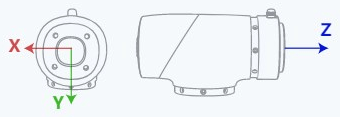
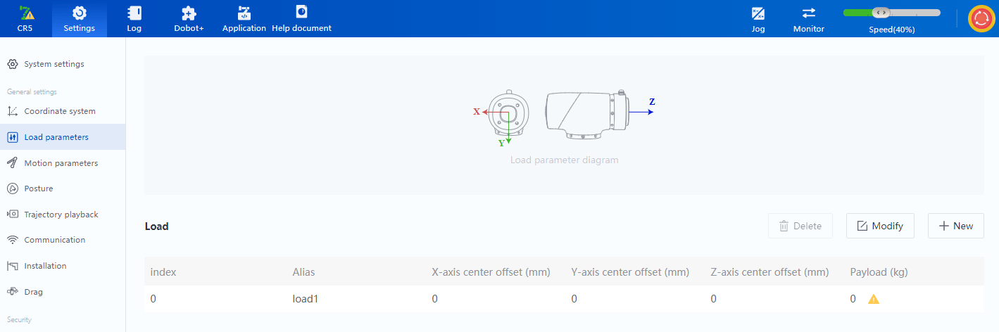

Motion parameters
Command list
The motion parameters are used to set or obtain relevant motion parameters of the robot. Please read General description before using the commands.
| Command | Function |
|---|---|
| CP | Set continuous path (CP) rate |
| VelJ | Set velocity rate of joint motion |
| AccJ | Set acceleration rate of joint motion |
| VelL | Set velocity rate of linear and arc motion |
| AccL | Set acceleration rate of linear and arc motion |
| SpeedFactor | Set global rate of robot arm |
| SetPayload | Set end load |
| User | Set global user coordinate system |
| SetUser | Modify specified user coordinate system |
| CalcUser | Calculate user coordinate system |
| Tool | Switch global tool coordinate system |
| SetTool | Modify specified tool coordinate system |
| CalcTool | Calculate tool coordinate system |
| GetPose | Get the real-time posture of the robot arm. |
| GetAngle | Get the real-time joint angle of the robot arm. |
| GetABZ | Get current position of encoder |
| CheckMovJ | Check operatibility of joint motion commands |
| CheckMovL | Check operatibility of linear or arc motion commands |
| SetSafeWallEnable | Switch on/off specified safety wall |
| SetWorkZoneEnable | Switch on/off specified interference area |
| SetCollisionLevel | Set collision detection level |
| SetBackDistance | Set backoff distance of collision |
CP
Command:
CP(R)
Description:
Set the continuous path (CP) rate, that is, when the robot arm moves continuously via multiple points, whether it transitions at a right angle or in a curved way when passing through the intermediate point.
The CP rate set in this command is only valid in the current project, and it is 0 by default when not set.

Required parameter:
R: continuous path rate, range: [0, 100]
Example:
-- The robot moves from P1 to P3 via P2 with 50% continuous path rate.
CP(50)
Move(P1)
Move(P2)
Move(P3)
VelJ
Command:
VelJ(R)
Description:
Set the velocity rate of joint motion (MovJ/MovJIO/RelMovJTool/RelMovJUser/RelJointMovJ).
The velocity rate set in this command is only valid in the current project, and it is 100 by default when not set.
Required parameter:
R: velocity rate, range: [1,100]
Example:
-- The robot moves to P1 with 20% velocity rate.
VelJ(20)
MovJ(P1)
AccJ
Command:
AccJ(R)
Description:
Set the acceleration rate of joint motion (MovJ/MovJIO/RelMovJTool/RelMovJUser/RelJointMovJ).
The acceleration rate set in this command is only valid in the current project, and it is 100 by default when not set.
Required parameter:
R: acceleration rate, range: [1,100]
Example:
-- The robot moves to P1 with 50% acceleration rate.
AccJ(50)
MovJ(P1)
VelL
Command:
VelL(R)
Description:
Set the velocity rate of linear and arc motion (MovL/Arc/Circle/MovLIO/RelMovLTool/RelMovLUser).
The velocity rate set in this command is only valid in the current project, and it is 100 by default when not set.
Required parameter:
R: velocity rate, range: [1,100]
Example:
-- The robot moves to P1 with 20% velocity rate.
VelL(20)
MovL(P1)
AccL
Command:
AccL(R)
Description:
Set the acceleration rate of linear and arc motion (MovL/Arc/Circle/MovLIO/RelMovLTool/RelMovLUser).
The acceleration rate set in this command is only valid in the current project, and it is 100 by default when not set.
Required parameter:
R: acceleration rate, range: [1,100]
Example:
-- The robot moves to P1 with 50% acceleration rate.
AccL(50)
MovL(P1)
SpeedFactor
Command:
SpeedFactor(ratio)
Description:
Set the global rate of the robot arm.
The global rate set by this command only takes effect when the current project is running. If it is not set, the value set in the software or TCP command before running the script will be adopted.
Required parameter:
ratio: velocity rate, range: (0,100)
Example:
-- Set the global rate to 50%.
SpeedFactor(50)
SetPayload
Command:
SetPayload(payload, {x, y, z})
SetPayload(name)
Description:
Set the weight and eccentric coordinates of the load, supporting setting directly or through preset parameter group. The parameters set by this command only take effect when the current project is running, overriding the previous settings. After the project stops running, the parameters restore to the original settings.
Required parameter 1:
- payload: weight of the load, unit: kg
- {x, y, z}: eccentric coordinates of the load, see the figure below for the direction of coordinate axis. unit: mm

Example 1:
-- Set the weight of the load to 1.5kg, and eccentric coordinates to {0, 0, 10}.
SetPayload(1.5, {0, 0, 10})
Required parameter 2:
- name: Name of the preset load parameter group, which needs to be saved in the software first.

Example 2:
-- Set the load using the pre-set parameter "load1".
SetPayload("load1")
User
Command:
User(user)
Description:
Set the global user coordinate system. If you do not specify the user coordinate system through optional parameters when calling other commands, the global user coordinate system will be used.
The global user coordinate system set by this command only takes effect when the current project is running. When it is not set, the default global user coordinate system is User coordinate system 0.
Required parameter:
User: user coordinate system after switch, specified through coordinate system index, which needs to be added in the software first.
Example:
-- Switch the global coordinate system to User coordinate system 1.
User(1)
SetUser
Command:
SetUser(index,table)
Description:
Modify the specified user coordinate system. The coordinate system modified by this command only takes effect when the current project is running, and returns to the original value after the project stops running.
Required parameter:
- index: user coordinate system index, range: [0,9]. The initial value 0 refers to the default user coordinate system.
- table: user coordinate system after modification (format: {x, y, z, rx, ry, rz}), which is recommended to obtain through "CalcUser" command.
Example:
-- Modify the User coordinate system 1 to the coordinate system calculated by "CalcUser"
newUser = CalcUser(1,1,{10,10,10,10,10,10})
SetUser(1,newUser)
CalcUser
Command:
CalcUser(index,matrix_direction,table)
Description:
Calculate the user coordinate system.
Required parameter:
- index: user coordinate system index, range: [0,9]. The initial value 0 refers to the default user coordinate system.
- matrix_direction: calculation method.
- 1: left multiplication, indicating that the coordinate system specified by "index" deflects the value specified by "table" along the base coordinate system.
- 0: right multiplication, indicating that the coordinate system specified by "index" deflects the value specified by "table" along itself
- table: user coordinate system offset (format: {x, y, z, rx, ry, rz})
Return:
user coordinate system after calculation (format: {x, y, z, rx, ry, rz})
Example:
-- The following calculation process can be equivalent to: A coordinate system with the same initial posture as User coordinate system 1, moves {x = 10, y = 10, z = 10} along the base coordinate system and rotates {rx = 10, ry = 10, rz = 10}, and the new coordinate system is newUser.
newUser = CalcUser(1,1,{10,10,10,0,0,0})
-- The following calculation process can be equivalent to: A coordinate system with the same initial posture as User coordinate system 1, moves {x = 10, y = 10, z = 10} along User coordinate system 1 and rotates {rx = 10, ry = 10, rz = 10}, and the new coordinate system is newUser.
newUser = CalcUser(1,0,{10,10,10,10,10,10})
Tool
Command:
Tool(tool)
Description:
Switch the global tool coordinate system. If you do not specify the tool coordinate system through optional parameters when calling other commands, the global tool coordinate system will be used.
The global tool coordinate system set by this command only takes effect when the current project is running. When it is not set, the default global tool coordinate system is Tool coordinate system 0.
Required parameter:
tool: tool coordinate system after switch, specified through coordinate system index, which needs to be added in the software first. If the specified coordinate system index does not exist, the project will stop running and an error will be reported.
Example:
-- Switch the global coordinate system to Tool coordinate system 1.
Tool(1)
SetTool
Command:
SetTool(index,table)
Description:
Modify the specified tool coordinate system. The coordinate system modified by this command only takes effect when the current project is running, and returns to the original value after the project stops running.
Required parameter:
- index: tool coordinate system index, range: [0,9]. The initial value of coordinate system 0 is the default tool coordinate system.
- table: tool coordinate system after modification (format: {x, y, z, rx, ry, rz}), which is recommended to obtain through "CalcTool" command.
Example:
-- Modify the Tool coordinate system 1 to the coordinate system calculated by "CalcTool"
newTool = CalcTool(1,1,{10,10,10,10,10,10})
SetTool(1,newTool)
CalcTool
Command:
CalcTool(index,matrix_direction,table)
Description:
Calculate the tool coordinate system.
Required parameter:
- index: tool coordinate system index, range: [0,9]. The initial value 0 refers to the default user coordinate system.
- matrix_direction: calculation method.
- 1: left multiplication, indicating that the coordinate system specified by "index" deflects the value specified by "table" along the flange coordinate system (TCP0).
- 0: right multiplication, indicating that the coordinate system specified by "index" deflects the value specified by "table" along itself.
- table: tool coordinate system offset (format: {x, y, z, rx, ry, rz})
Return:
tool coordinate system after calculation (format: {x, y, z, rx, ry, rz})
Example:
-- The following calculation process can be equivalent to: A coordinate system with the same initial posture as Tool coordinate system 1, moves {x = 10, y = 10, z = 10} along the flange coordinate system (TCP0) and rotates {rx = 10, ry = 10, rz = 10}, and the new coordinate system is newTool.
newTool = CalcTool(1,1,{10,10,10,10,10,10})
-- The following calculation process can be equivalent to: A coordinate system with the same initial posture as Tool coordinate system 1, moves {x=10, y=10, z=10} along Tool coordinate system 1 and rotates {rx=10, ry=10, rz=10}, and the new coordinate system is newTool.
newTool = CalcTool(1,0,{10,10,10,10,10,10})
GetPose
Command:
GetPose(user_index, tool_index)
Description:
Get the real-time posture of the robot arm.
If the command is called between two motion commands, the obtained point will be affected by the continuous path settings.
- If the continuous path is switched off (cp or r is 0), the target point will be obtained accurately.
- If the continuous path is switched on, a point on the transition curve will be obtained.
Optional parameter:
- user_index: user coordinate system index corresponding to the posture. The coordinate system needs to be added in the software first. The global user coordinate system will be used when the index is not set.
- tool_index: tool coordinate system index corresponding to the posture. The coordinate system needs to be added in the software first. The global tool coordinate system will be used when the index is not set.
Return:
Current posture of the robot arm: {pose = {x, y, z, rx, ry, rz}}
Example:
-- The robot moves to P1, and then returns to the current posture.
local currentPose = GetPose()
MovJ(P1)
MovJ(currentPose)
-- The robot moves to P1. Get P1 posture. Then the robot moves to P2.
MovJ(P1,{cp=0})
local currentPose = GetPose() --Obtain P1 posture
MovJ(P2)
GetAngle
Command:
GetAngle()
Description:
Get the real-time joint angle of the robot arm.
If the command is called between two motion commands, the obtained point will be affected by the continuous path settings.
- If the continuous path is switched off (cp or r is 0), the joint angle of the target point will be obtained accurately.
- If the continuous path is switched on, the joint angle of a point on the transition curve will be obtained.
Return:
Current joint angle of the robot arm: {joint = {j1, j2, j3, j4, j5, j6} }
Example:
-- The robot moves to P1, and then returns to the current posture.
local currentAngle = GetAngle()
MovJ(P1)
MovJ(currentAngle)
-- The robot moves to P1. Get P1 posture. Then the robot moves to P2.
MovJ(P1,{cp=0})
local currentAngle = GetAngle() --Get joint angle of P1
MovJ(P2)
GetABZ
Command:
GetABZ()
Description:
Get the current position of the encoder.
Return:
Current position of the encoder
Example:
-- Get the current position of the ABZ encoder and assign the value to the variable "abz".
local abz = GetABZ()
CheckMovJ
Command:
CheckMovJ(P, {user = 1, tool = 0, a = 20, v = 50, cp = 100})
Description:
Check the operability of the joint motion from the current point to the target point. The system will calculate the entire motion trajectory and check whether there are unreachable points in the trajectory.
Required parameter:
P: target point
Optional parameter:
- user: user coordinate system index of the target point
- tool: tool coordinate system index of the target point
- a: acceleration rate, range: (0,100]
- v: velocity rate, range: (0,100]
- cp: continuous path rate, range: [0,100]
See General description for details.
Return:
Check result.
- 0: no error
- 16: End point closed to shoulder singularity point
- 17: End point inverse kinematics error with no solution
- 18: Inverse kinematics error with result out of working area
- 22: Arm orientation error
- 26: End point closed to wrist singularity point
- 27: End point closed to elbow singularity point
- 29: Speed parameter error
- 32: Shoulder singularity point in trajectory
- 33: Inverse kinematics error with no solution in trajectory
- 34: Inverse kinematics error with result out of working area in trajectory
- 35: Wrist singularity point in trajectory
- 36: Elbow singularity point in trajectory
- 37: Joint angle is changed over 180 degrees
Example:
-- Check whether the robot arm can reach P1 through joint motion with the default setting. If it can, move to P1 through joint motion.
local status=CheckMovJ(P1)
if(status==0)
then
MovJ(P1)
status=CheckMovJ(P2) -- Perform the feasibility check from P1 to P2 after the robot arm moves to P1
if(status==0)
then
MovJ(P2)
end
end
CheckMovL
Command:
CheckMovL(P, {user = 1, tool = 0, a = 20, v = 50, cp = 100, r = 5})
Description:
Check the operability of the linear motion from the current point to the target point. The system will calculate the entire motion trajectory and check whether there are unreachable points in the trajectory.
Required parameter:
P: target point
Optional parameter:
- user: user coordinate system index of the target point
- tool: tool coordinate system index of the target point
- a: acceleration rate, range: (0,100]
- v: velocity rate, incompatible with speed. range: (0,100]
- speed: target speed, incompatible with v (if both speed and v exist, speed takes precedence). range: [1,maximum motion speed], unit: mm/s
- cp: continuous path rate, incompatible with r. range: [0,100]
- r: continuous path radius, incompatible with cp. range: [0,100], unit: mm
See General description for details.
Return:
Check result.
- 0: no error
- 16: End point closed to shoulder singularity point
- 17: End point inverse kinematics error with no solution
- 18: Inverse kinematics error with result out of working area
- 22: Arm orientation error
- 26: End point closed to wrist singularity point
- 27: End point closed to elbow singularity point
- 29: Speed parameter error
- 32: Shoulder singularity point in trajectory
- 33: Inverse kinematics error with no solution in trajectory
- 34: Inverse kinematics error with result out of working area in trajectory
- 35: Wrist singularity point in trajectory
- 36: Elbow singularity point in trajectory
- 37: Joint angle is changed over 180 degrees
Example:
-- Check whether the robot arm can reach P1 through linear motion with the default setting. If it can, move to P1 through linear motion.
local status=CheckMovL(P1)
if(status==0)
then
MovL(P1)
status=CheckMovL(P2) -- Perform the feasibility check from P1 to P2 after the robot arm moves to P1
if(status==0)
then
MovL(P2)
end
end
SetSafeWallEnable
Command:
SetSafeWallEnable(index,value)
Description:
Switch on/off the specified safety wall. The safety wall status set through this command only takes effect when the current project is running, and will restore to the original value after the project stops.
Required parameter:
- index: safety wall index, which needs to be added in the software first. range: [1,8]
- value：
- true: switch on safety wall
- false: switch off safety wall
Example:
-- Switch on No.1 safety wall.
SetSafeWallEnable(1,true)
SetWorkZoneEnable
Command:
SetWorkZoneEnable(index,value)
Description:
Switch on/off the specified interference area. The interference area status set through this command only takes effect when the current project is running, and will restore to the original value after the project stops.
Required parameter:
- index: interference area index, which needs to be added in the software first. range: [1,6]
- value：
- true: switch on interference area
- false: switch off interference area
Example:
-- Switch on No.1 interference area.
SetWorkZoneEnable(1,true)
SetCollisionLevel
Command:
SetCollisionLevel(level)
Description:
Set the collision detection level. The value set through this command only takes effect when the current project is running, and will restore to the original value after the project stops.
Required parameter:
Level: collision detection level. 0: switching off collision detection, 1~5: the larger the number, the higher the sensitivity.
Example:
-- Set the collision detection level to 3.
SetCollisionLevel(3)
SetBackDistance
Command:
SetBackDistance(distance)
Description:
Set the backoff distance after the robot detects collision. The value set through this command only takes effect when the current project is running, and will restore to the original value after the project stops.
Required parameter:
distance: collision backoff distance, range: [0,50], unit: mm
Example:
-- Set the collision backoff distance to 20mm.
SetBackDistance(20)